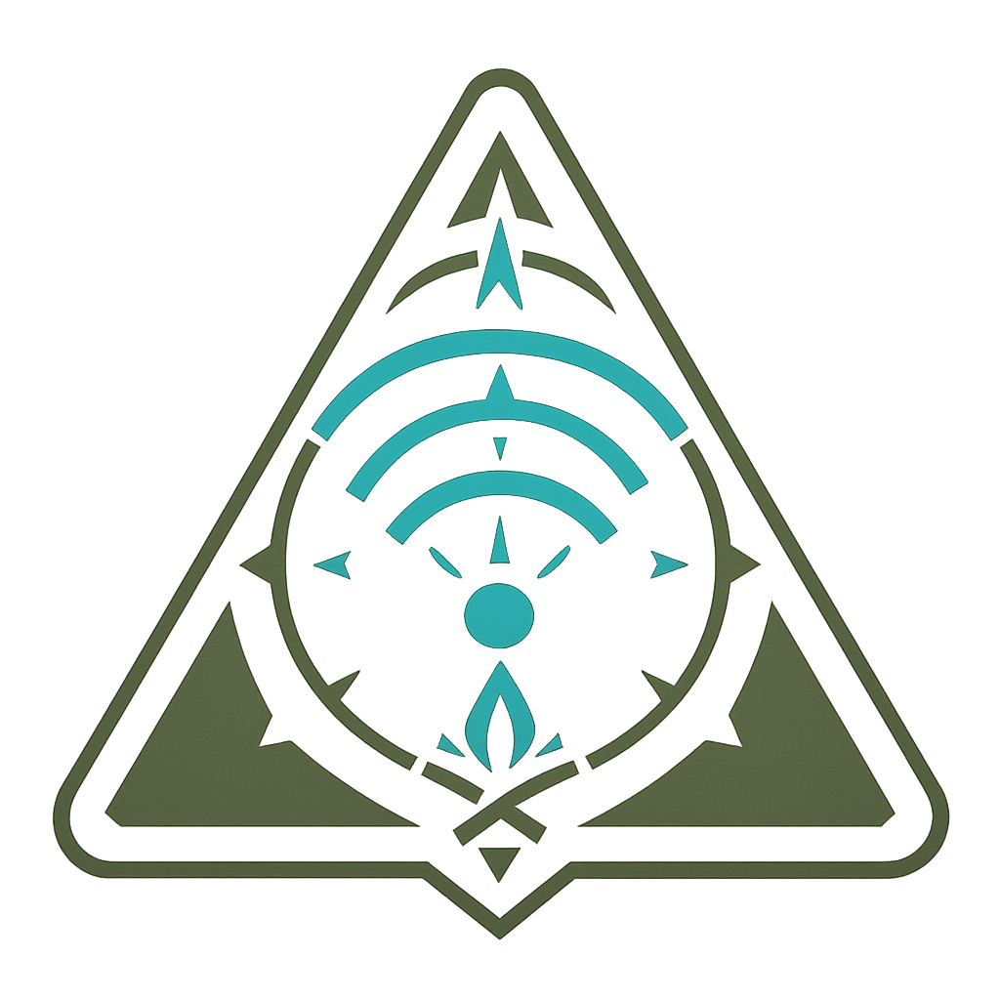

Cuando todo se apaga, tú debes estar listo.
NOMD BLACK OUT EDT es una aplicación móvil de alerta, comunicación y supervivencia diseñada para funcionar incluso cuando ya no hay red, satélites ni infraestructura.
Cuando el mundo digital se apaga, NOMD entra en modo ultra offline: se convierte en una herramienta de supervivencia autónoma, con guías, mapas y comunicación local entre dispositivos compatibles.